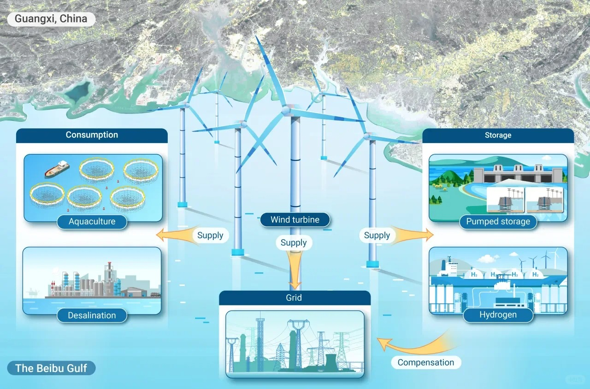
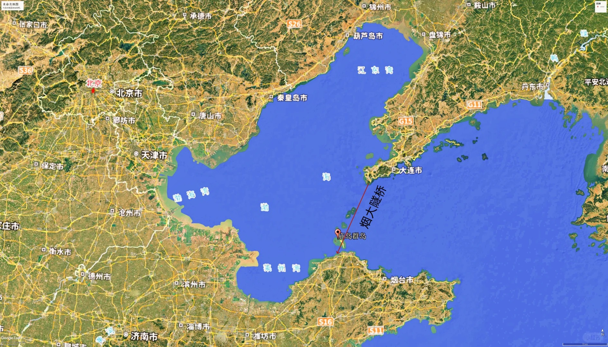
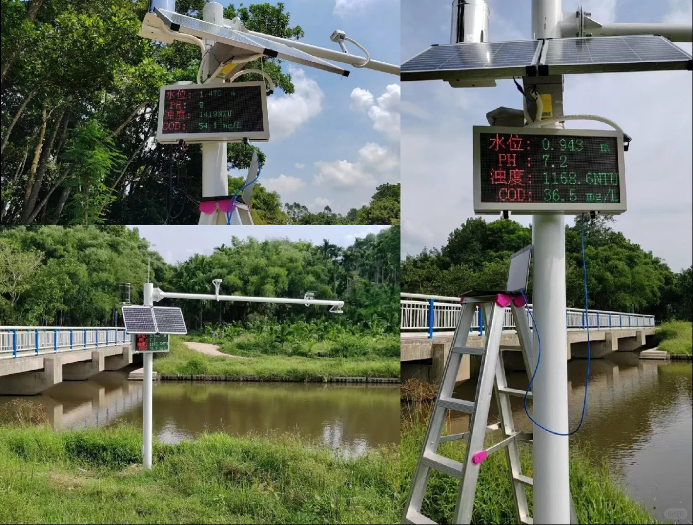

基于"AI深度学习+多波束测深+数字孪生仿真"三位一体技术架构， 为海洋强国战略提供高精度、智能化的海底地形测绘解决方案
三大创新突破，重新定义海洋测绘标准
基于CNN卷积神经网络，自动识别海底地形特征， 实现复杂地形误分区率从10-15%降至3.5%以下
深度强化学习DQN算法，实时动态重规划测线， 测线总长度减少32%，整体测绘效率提升28%
兼容90%以上主流国产换能器， 整体设备成本较进口同类产品低50%
体验AI如何智能识别海底地形并进行精准分区
系统通过卷积神经网络(CNN)自动提取海底地形特征， 包括坡度、粗糙度、深度梯度等关键参数， 实时调整分区策略，确保测绘精度与效率的最优平衡。
用数据证明技术实力，用成果展现创新价值
服务海洋强国战略，助力蓝色经济发展

为海上风电基础选址提供高精度地形数据， 确保风机基础安全，规避海底地质风险

为跨海大桥、海底隧道等工程提供全地形无漏测数据， 确保工程安全可靠

大范围高效测绘海洋生态环境， 为海洋保护和生态修复提供数据支撑